Cada ano celébrase a popular festa do Entroido, de orixe pagana, que tan común adoita ser nos diversos concellos galegos. Nenas, nenos e maiores gozan da xornada carnavalesca que ten lugar entre febreiro e marzo, dependendo da data anual na que cadre. A festividade prosigue ata a noite, onde unha gran verbena a cargo de orquestras de renome poñen fin ao esperado día. Adoita facerse baile, concurso de disfraces e organizar diversos premios aos tres máis orixinais e singulares.
Festa dos Remedios
Tipo
Relixiosa, celébrase en honra á Virxe dos Remedios
Localización
Nos lugares do Aido e Cornes
Data
A data é variable (despois da Pascua)
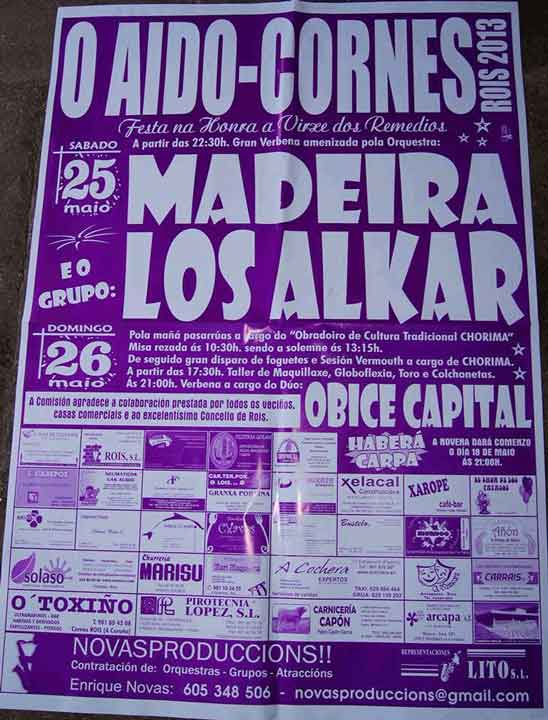
Descrición
A veciñanza dos lugares de Aido e Cornes, no municipio de Rois, honran á Virxe dos Remedios. O programa recolle tanto actos litúrxicos en honra á Santa, como grandes actuacións musicais a cargo de orquestras e formacións musicais do momento. Tamén nestes últimos anos programan actividades para os máis pequenos e pequenas da casa (inchables, talleres, animación...).
San Isidro Labrador
Tipo
Relixiosa, celébrase en honra a San Isidro Labrador, patrón do Concello de Rois
Localización
Rois – Parroquia de Rois
Data
15 de maio
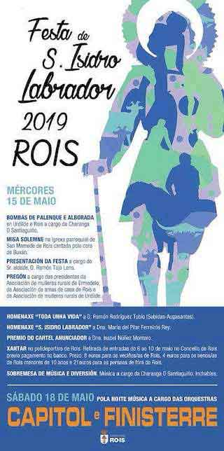
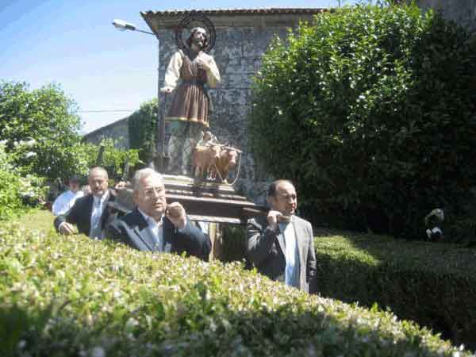
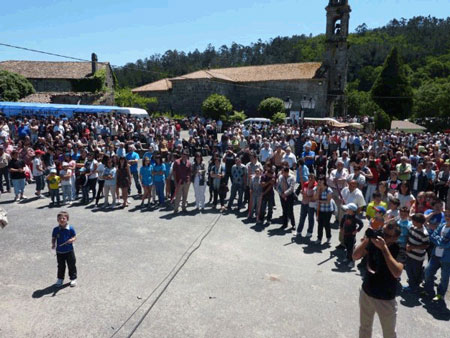
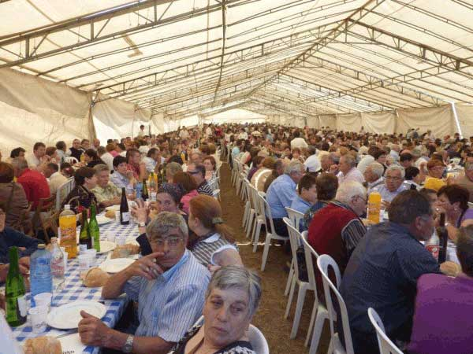
Descrición
Trátase da festividade máis esperada do ano polas veciñas e veciños. O programa de actividades supón unha variedade de oferta cultural, gastronómica, lúdica, musical e deportiva, co fin de cubrir as inquietudes da poboación roisense e de arredores. Deste xeito, o programa de festas adoita abarcar a semana completa da celebración, para así poder realizar o conxunto de actividades programadas.
Festas de Oín
Tipo
Relixiosa, celébrase en honor a San Antonio
Localización
Oín - Municipio de Rois
Data
Entre os días 14 e 15 de xuño
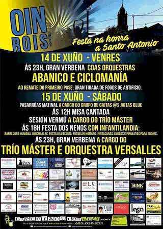
Descrición
A veciñanza de Oín comenza as festas o día 14 cunha gran verbena pola noite con orquestas e unha tirada de fogos artificiais. O día seguinte ten lugar a misa cantada e o longo do día disfrutan dos pasarúas, da festa dos nenos e como non, pola noite, novamente da verbena coas orquestras.
San Xoán de Buxán
Tipo
Festividade relixiosa
Localización
Parroquia de Buxán - Rois
Data
Na noite do 24 de xuño
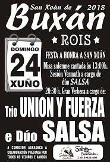
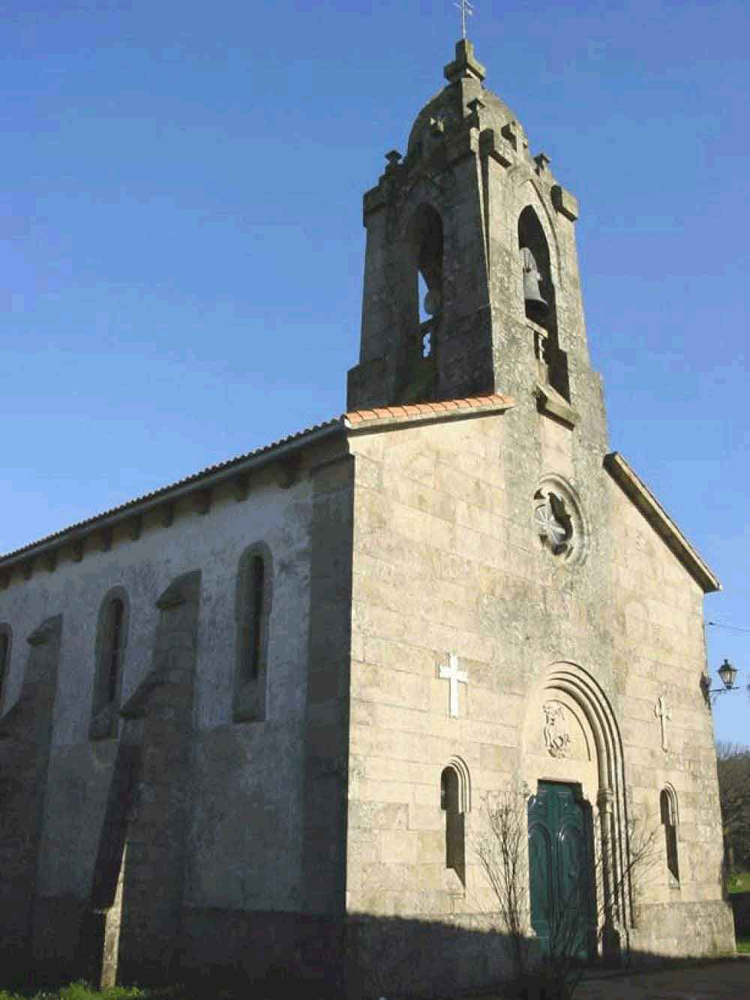
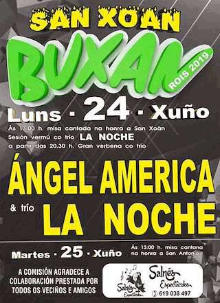
Descrición
O 24 de xuño celébrase na parroquia de Buxán, pertencente ao municipio de Rois, a festa de San Xoán de Buxán. As e os asistentes á xornada participan no acto relixioso e despois gozan da verbena acompañada por diversas agrupacións musicais, como, por exemplo, os tríos Ángel América e La Noche en edicións anteriores.
Naturfest
Tipo
Festival popular
Localización
Rois
Data
Principios de agosto
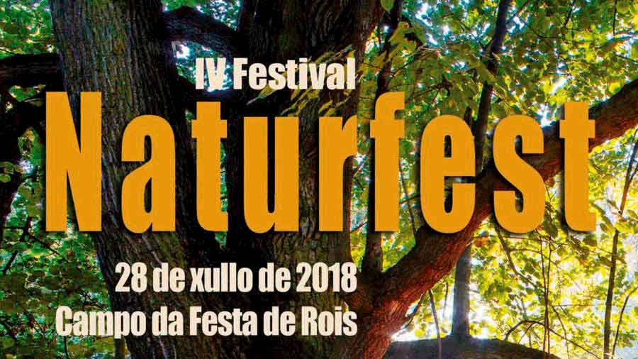
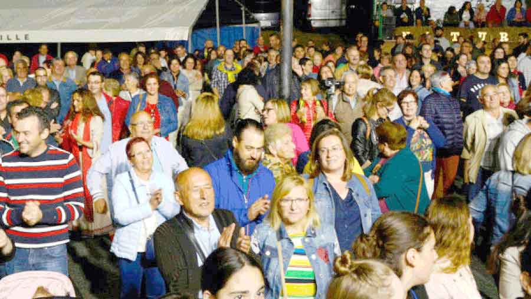
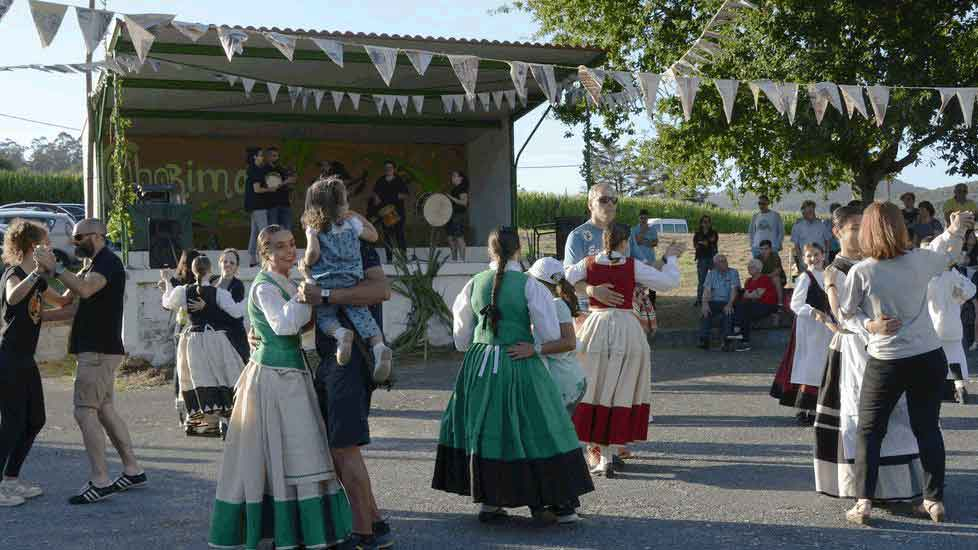
Descrición
O festival Naturfest nace co afán de enxalzar o panorama musical, local e galego, coa colaboración de diferentes axentes cultuais de índole musical do concello. Un dos principais fins desta celebración é dar a coñecer o traballo musical das agrupacións que crean a prol da cultural galega e ofrecen estilos orixinais diferentes ao repertorio de música comercial. Deste xeito, Naturfest avoga por poñer en valor a cultura patrimonial galega a través non só da música, senón tamén da organización de xogos populares, talleres culturais e do reencontro co natural.
San Eleuterio de Buxán
Tipo
Relixiosa, celébrase en honra á Virxe das Dores, San Eleuterio e o Santísimo Sacramento
Localización
O Piñeiro – Parroquia de Buxán
Data
Comeza o terceiro domingo de setembro e dura tres días. Domingo, luns e martes de celebración
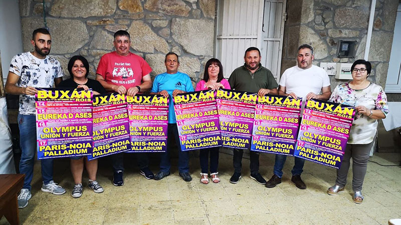
Foto de La Voz de Galicia
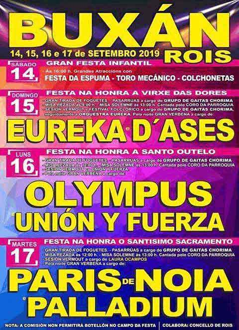
Descrición
Na tarde do sábado ten lugar unha festa infantil de inchables e espuma para as máis pequenas e pequenos, que inaugura a xornada. O domingo pola mañá grupos de gaitas percorren as aldeas animando á veciñanza no ambiente festivo. Arredor das 9:00h acontece a misa rezada e sobre a 13:00h a misa solemne cantada polo coro parroquial na honra á Virxe das Dores. A continuación as e os asistentes acoden á sesión vermú acompañada de música orquestral e folclórica. Á noite celébrase a verbena con orquestras. O luns réndese homenaxe a San Outelo, tamén con grupos de gaitas, misa solemne cantada, sesión vermú e verbena. A festividade remata o martes, dedicado ao Santísimo Sacramento. Péchase a xornada co son das gaitas, sesión vermú e música orquestral.
Fonte: Facebook | Páxinas Galegas | La Voz de Galicia | Páxina de Troula-Audio | Festaafesta Wordpress